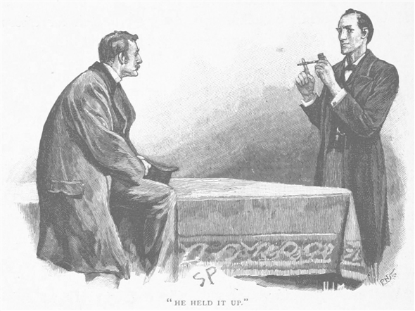
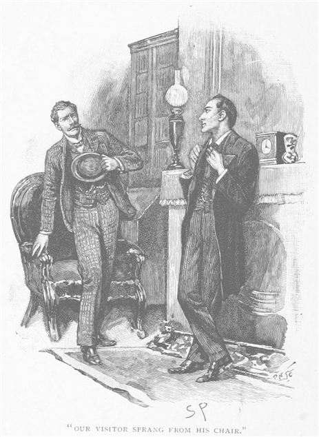
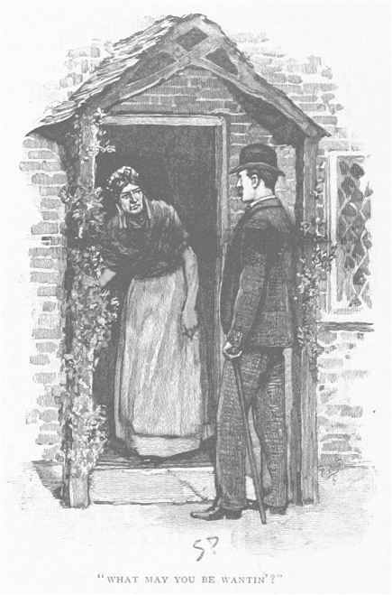
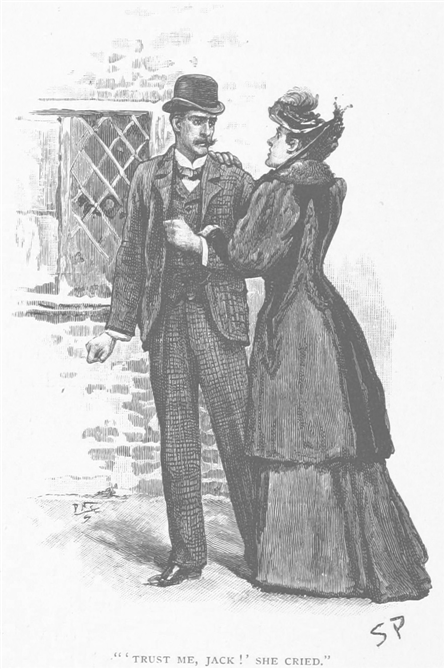
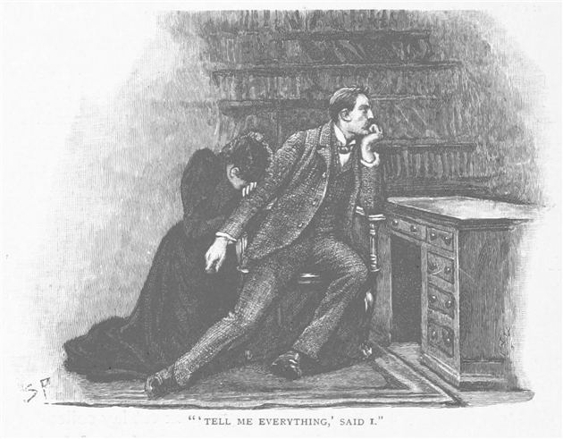
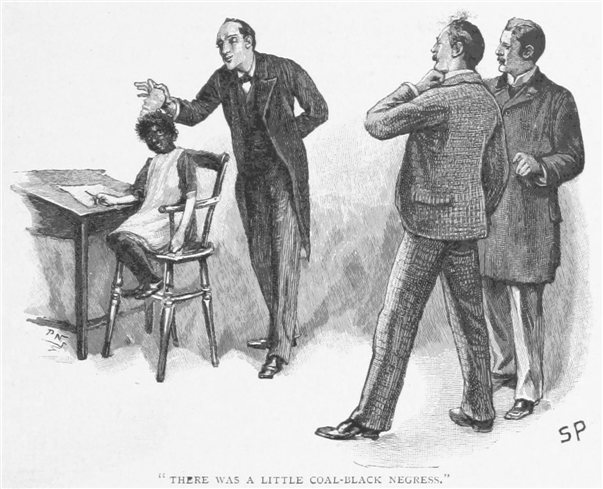
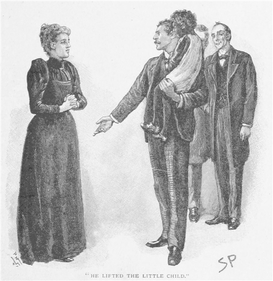

公表せんとして、このような短編を膨大な事件の山から選んで書く際の話だ。そういった事件では、我が友人の類稀なる才能のために、私は否応なく不思議な舞台の観客となり、時によってはその登場人物となってしまう。そのせいで書く際には我知らず失敗談よりも成功談が多くなる。だが何も彼の名声のためではない――正直なところ、思案に余るような場合こそ、彼の力とその器の大きさに賞賛を送りたくなるのだが――まともな理由としてはやはり、彼が失敗するときは誰であろうとうまくいかず、話は永遠に結末へ至らぬままというのが大半であるからだ。しかしながら、時として、推理は間違っているのに、それでも真相が明らかになるということがたまにある。この種の事件は六つほど書き留めてあるが、『第二の血痕』とこれからお話しする物語のふたつが、もっとも興味深い一面を見せてくれる。
シャーロック・ホームズという男は、運動のための運動は滅多にしなかった。だが、はげしい肉体労働に彼ほど耐えうる人間はほとんどなく、また確かに同じ重量級では、私の見たうちでも
早春のある日、ホームズはのんびりとした気持ちで散歩に出、私も同行してリージェント・パークをぶらついた。楡の木から緑の若芽が吹き出しかけ、栗の木のぬめりとする枝先からはちょうど五つに重なる葉をつけ始めたところだった。二時間近く一緒に歩き回ったが、ろくに会話もしなかった。お互い勝手を知り合った仲だから、この方がちょうどいい。五時になろうという頃、我々は再びベイカー街へ戻ってきた。
「すいません。」と戸を開けたとき小間使いの少年が言う。「お留守のあいだに男のお客さまがありました。」
ホームズはしまったというふうに私に目をやる。「これだから午後の散歩は。」とこぼし、「もうその人は帰ったのか？」
「はい。」
「中でお待ちするようにとは？」
「いえ、中へお通ししたんです。」
「どのくらい待っていた？」
「三十分ほどです。とてもせっかちな方で、ここにいらっしゃるあいだ始終、歩き回ったり足踏みしておられて。僕は部屋の外でお待ちしていたのですが、それでもわかるくらいで。ですがとうとう廊下にお出になって、『もう、帰ってこないじゃないか』と、そうその方はおっしゃいました。『もうほんの少しだけお待ちいただけますか』と申し上げますと、その方は『じゃあ外で待ちます。ここじゃ息が詰まりそうで。じきに戻ります。』とおっしゃっていきなりお出になり、いろいろ申し上げたのですが、お引き留めできませんでした。」
「いやいや、それで十分。」とホームズは言って、我々は部屋の中へ入った。「実に待ち遠しいね、まったく。ワトソン、僕は事件が欲しくてたまらなかった。どうも、その男が気を揉んでいたことからも、大事のようだ。おや！ あの机にあるパイプ、君のではない。男の忘れ物か。よく使い込んだブライアで、軸が少し長い。愛煙家のあいだで琥珀と呼んでいるものだ。本物の琥珀の吸い口など、そういくつもロンドンにあるものかね。中に蠅がいるのがその証だと思っている輩もいる。ふん、いっぱしの商売人ともなれば、琥珀のまがい物に偽物の蠅を入れることくらいする。さておき、その男はよほど気が動転していたに相違ない。大切なはずのパイプを置き忘れるほどだ。」
「どうすれば、大切なパイプという結論が出るんだね？」と私は訊いた。
「何、僕の見積もりでは、そのパイプの元の値段は七から六ペンス。ところがほら、二度直しが入っている。一度は木の軸を、一度は琥珀のところを。いずれの直しもご覧の通り銀が巻いてある。パイプの値はもとより遥かに高くなっているはず。人というものは、自分から手当をしてやったパイプの方が、同じ額で買った同じものよりもずっと大切にする。」
「次の推理は？」と私は先を促す。ホームズがそのパイプを手でいじくりながら、彼独特の思いに沈んだ目つきでじっと見ていたからだ。
ホームズはパイプをつまみ上げ、細長い食指でその上を軽く叩く。ちょうど何かの骨について講義している大学教授がよくやるように。

「パイプというのものは、時として意外なほど人の興味を惹く。」と言う。「これほどひとりひとりの個性が表れるものはない。まあ、懐中時計と靴ひもを抜いての話だが、今回はそれほど目立ったことも大事なことも教えてくれそうにない。この持ち主について確かなのは、体格の立派な男で左利き、歯は丈夫だが手癖が悪く、あとあえて節約生活を送る必要はないということだ。」
我が友人の今の言葉は、声こそさりげなかったが、その目は私に向けられ、推理についてくるかどうか窺っているのがわかった。
「男が裕福というのは、七シリングのパイプで吸うからかね？」と私。
「銘柄はグロウヴナ・ミクスチュア、一オンス八ペンス。」とホームズは答え、小突いて手のひらに少量出してみせる。
「その半値でも葉としては贅沢だから、あえて倹約する必要がない。」
「なら他の点については？」
「この男、パイプの火をランプやガス灯でつける癖がある。ほら、片側がすっかり焦げているだろう？ もちろんマッチではこうはならない。マッチの火をパイプの縁にあてておく男などどこにいる。だがランプで火をつけるとあれば、どうやっても火皿を焦がしてしまう。しかも焦げているのはみな右側。そこでこの男が左利きだと推察した。君もパイプをランプへ持っていけば、ほら右利きなら自然と左側が火に当たるだろう？ 反対の手でもできなくはないが、ぎくしゃくする。これを始終やっていた。それから琥珀のところを噛みつぶしている。それをするには、筋肉も力もあって、歯も丈夫でなくてはならぬ。さて、間違いでなければ、その人物が階段を上っている。ならばこのパイプよりも面白い何かが研究できよう。」
ほどなくして、部屋の入口が開き、背の高い若者が入ってきた。男は灰色のダーク・スーツを無難に着こなし、手には鳶色の中折帽を持っていた。私は三十くらいと見当をつけたが、実際はもういくつか上だったらしい。
「すいません。」と男はまごつきつつも言う。「戸を叩いた方がいいとわかっていたんですが、ええ、わかってます叩かなきゃいけないんです。その、ちょっと気が動転してて、だから、今のことはそう考えてください。」男は眩暈がするというふうに手を額にかざし、座るというより倒れるといった調子で椅子に身を預けた。
「見たところ、二晩ほどお休みになってませんね。」ホームズがいつものようにうち解けた調子で語りかける。「神経にこたえるでしょう。仕事、ましてや遊びなんかよりも。僕にできることがあれば、何なりと。」
「相談に乗ってください、もうどうしてよいやら、僕の人生がめちゃくちゃになりそうなんです。」
「僕を諮問探偵としてお雇いに？」
「それ以上に、考えを伺いたいんです、賢いあなたに――道理を知るあなたに。これからどうすればいいのか知りたいんです。あなたなら絶対に出来ると思うんです。」
男は一気に言葉をまくし立てた。本人にとってはしゃべることすらつらく、もう気持ちだけで何とか持ちこたえているというふうに私には思えた。
「微妙な問題なんです。」と男は言う。「誰だって、家庭の問題を他人に話すだけでも嫌なのに、初対面のお二人と、妻の振る舞いについて話し合うなんて、とんでもない。そんな羽目になるなんて、ひどい話です。でももう行き詰まってしまったんです。助けが必要なんです。」
「そうですね、グラント・マンロウさん――」
とホームズが話し出すと、依頼人は椅子から飛び上がり、「えっ！」と大声を上げる。「僕の名前をご存じで？」

「お名前を伏せておきたいのなら、帽子の裏地に名前を書くのはおやめになるようおすすめします。もしくは、自分の話している相手には、帽子の山の方を見せることです。まったくの話、この友人と私は、数多くの変わった秘密をこの部屋で伺ってきました。そして幸いにも、大勢の人々の悩みを晴らしてまいりました。あなたにも同じようにして差し上げることができるかと存じます。そこでお願いです。貴重なお時間ですから、一刻も早く、事の次第をお話しいただけませんか。」
依頼人は再び額に手をやった。相当気の重いことなのだろう。その身振りと表情のあちこちから、内気で人見知りする男だということがわかる。そして気持ちのどこかに恥ずかしさがあって、自分の傷をできれば見せずにおきたいようだ。そのときふと、男はぎゅっと両手を組み合わせる。恥も外聞もないと決意の体で語り出した。
「こういう次第なんです、ホームズさん。僕は結婚してまして、もう三年になります。そのあいだ、妻と僕はお互いに深く愛し合い、幸せに暮らしていました。よくある新婚夫婦です。二人は似たもの同士で、そっくりです。考えも、言葉も、振る舞いも。ところが先日の月曜以来、突然、ふたりのあいだに壁ができたんです。僕は気づいたんです、妻の人生には、彼女の心には何かある。僕はちっとも知らなかったんです。町ですれ違う女の人のように。ふたりが離れてしまった、そのわけが知りたい。
そうです、先を続ける前にこれだけは念を押しておきたいのですが、ホームズさん、エフィは僕を愛してます。それについては絶対の自信があります。彼女は全身全霊をかけて僕を愛してくれています、まさに、今もっとも。わかります。感じます。議論の余地はありません。男というのは、女が愛しているときはそれだけですぐわかるのです。しかしふたりのあいだに秘密があります。これが晴れるまで、元と同じというわけにはいきません。」
「早く次第を聞かせてください、マンロウさん。」とホームズはもどかしそうに言う。
「でしたらエフィの過去について知ってることをお話しします。はじめて逢ったとき彼女は未亡人でした。それにしてはずいぶん若くて――二五でした。当時はまだヒーブロンという姓で、若い自分にアメリカに渡ってアトランタという町に住み、そこでヒーブロンという売れっ子弁護士と結婚しました。子どももひとり設けましたが、運悪く土地で
僕自身はホップの商いをやってますが、七〜八〇〇ポンドの収入があるので、自分たちだけでも不自由なく、ノーベリに年八〇ポンドのこじゃれた屋敷を持ってます。小さなところですが割合田舎らしく、それでいて町にも近いんです。すぐ近くには宿が一軒、人家が二軒、あと小屋がひとつ正面の草地の向こうにあるだけで、そのほかは駅に行くまでのあいだ一軒もありません。仕事で決まった時季に町へ行きますが、夏のあいだはそれもなく、そんなふうにふたりは田舎の一軒家で、妻と僕は思う存分、幸せに暮らしていたんです。そうです、この呪わしい事件が始まるまで、ふたりには何の影も差したことはなかったんです。
先を続ける前にこれだけは申し上げねばならないのですが、ふたりが結婚したとき、妻は自分の財産をすべて僕名義にしたんです。僕はむしろ反対でした。だって困ったことになりますよ、僕が事業で失敗したら。でも彼女の意志は強く、押し通されました。さて、六週間ほど前のことです。彼女が僕のところへ来て、
『ジャック、』と言うのです。『いつかあなたの名義にしたとき、言ったでしょう。必要なときはいつでもそう言ってくれって。』
『ああ、そもそも君のものだからね。』
と私が答えると、彼女はこう言うんです。
『じゃあ……一〇〇ポンド欲しいんだけど。』
僕はちょっとためらいました。単に新しい服とか、そんなものが欲しいのかと思ってたんです。で、僕は訊ねました。
『何に使うの？』
すると彼女は『まあ』と言って、冗談っぽく言うのです。『あなたは私の銀行さんなんでしょ。銀行の人は、質問なんてしないのよ。ねっ。』
『本当に要るなら、もちろんあげるよ。』と僕は言いました。
『そうよ、本当に要るの。』
『でも、僕には何に使うのか教えてくれないの？』
『いつか、きっとね。でも今はだ〜め、ジャック。』
こんなわけで僕は納得するしかなく、まさに初めて、ついにふたりのあいだに秘密が入り込んだその時だったのです。僕は小切手を渡したきり、そんなことはすっかり忘れていました。のちに起こったことと無関係かもしれませんが、言っておいた方がよいと思ったので。
ええと、さきほど僕は、うちからそう遠くないところに小屋があると言いましたね。二軒のあいだにはちょうど野原があるんですが、向こうへ行こうと思うと大きな道に沿ってから脇道に入らないといけません。そこを過ぎたあたりは赤松の小さないい感じの森になっています。僕は好きで、よくそこを散歩します。木々がいつもそばにあると、いいものでしょう？ その小屋ですが、この八ヶ月はずっと空き家だったんですが、もったいない物件で、小綺麗な二階建てで、古風な玄関で、周囲には
すると今週の月曜、夕暮れ時、僕が例によってうろついておりますと、その脇道から何も積んでいない幌付きの荷馬車がやってくるのに出くわしました。そして玄関脇の芝生に、絨毯とかが置いてありました。どうやら誰かがその小屋に越してきたらしいんです。いったん通り過ぎましたが、立ち止まり、よく暇人がやるように、小屋を眺め回しつつ、どんな人が僕らのご近所に来て住むんだろうと想像してみました。と、そのときふと見たものに、僕ははっとしました。誰かの顔が、上の階の窓から僕をのぞいているんです。その顔がどうこうというわけではないんです、ホームズさん、ただ背筋がぞっとしてしまって、距離も少しあって、特徴も分からなかったのですが、その顔はどこか不自然で、人間でないような、そんな気がして、僕は急いで近寄って、もっと近くで、僕をのぞいている奴を見てやろうと思ったんです。でも走り出すと急に顔は引っ込んで、まるで不意に部屋の闇の中へ引っ張られたみたいでした。この一件について何度も思い返しながら、その印象について詳しく考えようとしました。男の顔だったか女の顔だったのかは分かりません。遠すぎました。でもその色だけははっきり覚えています。血の気のない、死人のような土色。どこかぎこちなく、こわばっていて、気持ち悪いほどに不自然なんです。不安のあまり、僕はその小屋の新しい住人をちょっと見てやろうと心に決めました。近づいて戸を叩きますと、すぐ入口は開いて、のっぽでがりがり、いかつくて怖い面の女が出てきました。
「何かご用？」
女の言葉は北部訛りでした。

「近所に住んでいる者です。向かいの。」と僕はあごを使って家を示しました。「お引っ越しを見掛けたものですから、何かお手伝いできることがあればと思いまして……」
「いえ、お願いしたいときはこちらから参ります。」そう言って、目の前で戸をぴりゃりと。ぞんざいな断り方に腹が立ちましたが、そのままうちに帰ってきました。一晩中、何か他のことを考えようとしても、僕の心は窓際のお化けと、失礼なあの女のことに至るのです。お化けのことは妻に何も言わないでおこうと思いました。些細なことでも気にする
私は普段から安眠する方で、夜中は何があっても起きないというのがうちでのお決まりの冗談でした。ところが、その晩に限ってどうしたわけか、昼間の件で少々気が立っていたからか分かりませんが、普段のようにぐっすりと寝付けなかったんです。うとうとしていると、ぼんやりと何かが部屋に入ってきたような気がしました。そしてだんだんと分かってきたのは、服を着て、外套を引っかけ、帽子をかぶっている妻の姿です。口からむにゃむにゃと、驚きやら小言やらが寝言みたいな形で出てしまったのですが、その瞬間、ふと目をうっすら開けて蝋燭の光に照られている彼女の顔を見て、僕はびっくりして息を呑みました。あんな顔の彼女は、今まで見たことがありません――とても彼女とは思えません。真っ青で息を切らし、寝台の方をこっそり窺いながら、外套を押さえて、僕が物音で起きてしまったのかを確かめました。やがてぐっすり寝込んでいるものと思い込んで、そっと部屋から滑り出していってしまいました。そのあとすぐ、何かカチャリという音を耳にしたのですが、どうも正面玄関の
『どこへ行っていたんだい、エフィ？』彼女が入ってきたとき訊ねました。
妻はひどくびっくりして、何かひゃっという叫び声を上げました。その叫びよう、驚きようで、僕の心はざわざわと騒ぎ始めるのです。何か曰くありげでした。妻はいつも何でもしゃべる開けっ放しの性格で、それだけにぞくぞくっとするんです。あの彼女が、こっそり自分の部屋へ入ろうとして、旦那に声をかけられると声をあげて怯えるだなんて。
『起きてたの、ジャック？』と苦笑いして、『夜中は起きないんじゃなかったの。』
『どこに行ってたの？』と、僕は少し険しい声で訊ねてみました。
『驚かせちゃったみたいね。』と言う彼女を見ると、手の指はぶるぶる震えて、外套の
そんな話でしたか、そのあいだ、ただの一度も僕の方を見ようとせず、声も普段の調子とはまったく違いました。はっきり分かりました。彼女は嘘をついている。僕は何も返事をせずに、壁の方に顔を向けて。心が裂けそうで、中にはもう毒々しい不信感、猜疑心が何千何百といっぱいで。いったい何を、妻は僕に隠しているのか。妙な外出のあいだ、どこにいたのか。はっきりするまでとても落ち着けません。でももう一度訊く勇気もありません。嘘であれ、一度説明を聞いた後でしたので。それからは朝になるまで、僕は悶々とのたうち回り、ああでもないこうでもない、どれも解答らしいものにはたどり着けません。
翌日は
水晶宮のあたりまで歩いていって、一時間ほど構内で時間をつぶし、ノーベリに帰ってきたのは一時でした。たまたま例の小屋の前を通ったので、しばらく立ち止まって、窓を見上げました。昨日、僕をじっと見ていた顔お化けをもう一度見られるかも、と思ったんです。立っていると、まさにびっくり、ホームズさん、ふいに戸が開いて、妻が出てきたんです。
驚きのあまり、言葉を失いました。でも僕の驚きなんてたいしたことは。目のあったときの、妻の顔ほどでは。妻はとっさに引っ込もうとする素振りを見せましたが、逃げも隠れも出来ないと観念して、こっちへ来ました。顔は真っ青で、目は怯えて、でもちぐはぐに、口元は微笑んでるんです。
『そう、ジャック、今度いらっしゃったお隣さんへ、何かお手伝いできませんかって、ちょっとうかがってたとこなの。あたしの顔に何かついてる、ジャック？ 何怒ってるの？』
『そうか、昨日の夜はここだったんだな。』
『何のこと？』と声がうわずります。
『ここに来てた。絶対にそうだ。誰なんだ、一時間も会ってた奴らは？』
『ここに来たのは初めてだけど。』
『嘘と分かってて、どうしてそういうことを言うんだ？』と声を張り上げました。『声だっていつもとまるで違う。僕は君に隠し事なんてひとつだってない。この小屋に入らなきゃ。隅の隅まで調べなきゃ。』
『やめて、ジャック、お願い！』その声は我も忘れて、息も切れ切れでした。そして僕が戸に近寄ると、袖口にしがみついて、夢中で引っ張り戻そうとするのです。
『本当にお願いだからやめて、ジャック！』と叫ぶのです。『約束するから、いつかきっと、ちゃんと話すから、でも、今ここに入ったら、絶対不幸になるの。』そこで僕は彼女を振り放そうとしましたが、すがりついて、我を忘れてお願いするんです。
『嘘じゃないの、ジャック！』と大声で。『一生のお願い、あとで悲しむようなことは絶対やめて。わかってよ、内緒にするのは、あなたのためなの。あたしたちふたりの人生がかかってる。一緒に帰れば、うまく行くの。無理矢理中に入ったりなんかしたら、あたしたちはもうおしまいよ。』

それはもう、真剣で、必死で。そんなふうに言うもんですから、戸の前で、どうしたものかと立ち止まりました。
やがて僕は言いました。『信じるけど、ひとつ条件がある。たったひとつだけ。こんな真似は、今日この時間で終わりにするんだ。この件については、秘密でも何でも勝手にしてくれ。だけど、約束してくれないか、もう夜には二度と出かけないと。それともう二度と内緒事はごめんだ。これまでのことは忘れるよ。だから、これからもう二度としないと約束してくれ。』
『信じてくれると思ってた。』と彼女は言って、ほっと大きなため息をつきました。『あなたの、言う通りに。行きましょ――ねえ、うちに帰りましょう。』
僕の袖をつかんだまま、彼女はその小屋から僕を連れて離れました。少し行ってから振り返ると、例の土色の顔が、二階の窓から僕たちを見つめているのです。あれと妻のあいだにはどんなつながりが。いや、昨日見たあのがさつな女は彼女とどういう関係なのか。不思議な謎です。でもわかるんです、また個々が落ち着くためには、絶対、これを解かなきゃって。
それから二日のあいだ、僕はうちにおりました。そして妻は、ふたりの約束を忠実に守っているようで、知ってる範囲では、うちの外へは出ようとしませんでした。でも二日目のこと、がんとした証拠をつかんだのです、かたく約束をしたにもかかわらず、彼女はその秘密の何かにしばられていて、夫への義務にも背いてしまったんです。
その日、僕は町へ出かけていたのですが、いつも乗る三時三六分の代わりに、二時四〇分の汽車で帰ってきたのです。そしてうちへ入ると、お手伝いがびっくりした顔をして、広間に飛び出してきました。
『妻はどこなんだ？』と僕は訊ねました。
『散歩にお出かけになったようで。』と、手伝いの女が答えました。
僕の心はみるみる猜疑心でいっぱいになり、二階に駆け上がって、彼女がうちにいないか確かめに行きました。その途中、ふと窓から表に目をやると、つい先ほど僕と口をきいていたお手伝いが、野原を横切って例の小屋の方へ走っていくのです。これでもう何もかもがはっきり見えてきました。妻はあそこに行っていて、僕が帰りでもしたら迎えに来るよう言いつけてあったのです。僕は頭に血が上って、駆け下りるや外を突っ切って走っていきました。きれいさっぱり決着をつけようと思っていました。――僕は妻とお手伝いが例の脇道を急いで戻ってくるのに出会いましたが、立ち止まって話をするつもりもありません。あの小屋のなかに秘密があり、それが僕の人生に影を投げかけている。誓いました、どんなものであろうと、もう放っておくことはできない、と。その小屋に着くと、戸を叩きもせず、いきなり把手を回して中に飛びこみました。
一階はまったく静かでひっそりしていました。台所では薬缶の沸騰する音がし、大きな黒猫が籠のなかで背中を丸めているだけで、以前の女の影はどこにも見えませんでした。別の部屋に駆け込んでみましたが、同じように誰もいません。そこで僕は二階に上ってみましたが、ひとけのない空っぽの部屋がふたつあるだけで、家じゅうどこにも、人っ子ひとりいません。家具類や絵もごくありふれた普通のものばかりで、ただ顔お化けの窓がある部屋だけは別でした。居心地よく飾られた部屋で、加えて疑念が一気に強まったのは、見ると、炉棚の上に妻の全身像の写真が飾ってあったからです。その写真というのは、たった三ヶ月前に僕の希望で撮ってもらったものでした。
かなりの時間、その小屋にいたと思います。本当に無人かどうか確かめたんです。やがてそこを出たのですが、今まで経験したことがないくらい、重い気持ちになりました。帰宅すると、妻が玄関の広間に出てきました。でも僕はもう気分も悪いし腹も立つやらで、物も言わずにそのまま書斎へ引っ込みました。でも彼女は後を追ってきて、戸を閉める前に入り込んできたのです。
『ごめんなさい、約束を破って。ジャック。』と彼女は言いました。『でも事情さえわかれば、きっと許してくれると思うの。』
『じゃあ話してくれ、みんな。』と僕は言いました。

『無理、ジャック、無理なの。』と彼女は叫びます。
『話すんだ、誰があの小屋に住んでいるのか、誰があの写真をもらったのか、でなきゃ、ふたりの絆なんて、いったい何なんだ。』僕はそう言うと、彼女から逃げてうちを出てしまいました。それが昨日のことなんです、ホームズさん。それ以来彼女に会ってませんし、この奇妙な事件についてもこれ以上は何も分かりません。これはふたりのあいだに差した初めての影です。もう頭がこんがらがって、何をすればいちばんいいのか分からないのです。すると今朝のことでした、ふと僕は思いついたんです。あなたなら相談に乗ってくださると。そこでここへ飛んできて、こうしてあなたに何もかも身を委ねている次第です。まだはっきりしない点がありましたら、どうぞ訊いてください。けれど、いずれにせよ早く、どうしたらいいか、教えてください。この不幸にもう耐えられないんです。」
ホームズと私は、この途方もない話をのめり込みながら聞いていた。男はひどく興奮していたので、早口で話もあちこちに飛んでいたが、我が友人はしばらく何も言わず、じっと座っていた。額に手を当てて、考えに耽っている。
「ひとつ。」とついに口を開く。「窓に見たのは、人間の顔だと断言できますか？」
「見たときはいつも、そこそこの距離がありましたから、言い切ることはできません。」
「ですが不気味な印象を受けたとおっしゃる。」
「顔色が不自然で、表情が変にこわばっているんです。近づくと、ぱっと消えてしまって。」
「それは御前さまが一〇〇ポンドお願いしてから、どれくらい後になりますか？」
「二ヶ月ばかり。」
「先のご主人の写真を見たことは？」
「いえ、死んですぐ、アトランタに大きな火事があって、紙の類はみんな焼けてしまったそうです。」
「それでも死亡証明書は残ってます。そちらをご覧には？」
「ええ。火事のあと、複本をもらったと。」
「奥さんのアメリカ時代の知人にお会いになったことは？」
「いえ。」
「奥さんがまたアメリカへ行くという話は？」
「ないです。」
「では向こうから手紙は？」
「ないです。」
「どうも。ではこの件について、少し考えを巡らせるとしましょう。その小屋がそのまま空き家だとすると、少々厄介です。しかしその反対に、そうであってほしいのですが、その住人があなたが来ると知らされ、昨日は踏み込む前に出て行ったのだとすれば、今はもう戻っているので、解決も楽になるでしょう。私から何か言えるとすれば、ノーベリへお帰りになって、もう一度その小屋の窓を調べてください。もし誰か中にいると確信できるようでしたら、自分で中へ入らずに、僕らに電報を打つこと。受け取って一時間以内に現場へ行き、たちまち何もかも明らかにできると存じます。」
「まだ空き家のままなら？」
「その場合は明日参りますので、そのときにご相談を。さようなら、何よりも落ち着くことです。確たる証拠をつかむまでは。
よくないことが起こりそうだ、ワトソン。」グラント・マンロウ氏を戸のところまで見送り、戻ってくると我が友人はそのように言った。「君はどう思うね？」
「悪事の匂いがする。」と私は答えた。
「そう。裏で脅迫されている。間違いということもままあろうが。」
「すると脅しの張本人は誰だろう？」
「うむ、あの小屋の唯一心地よいという部屋に住み、暖炉の上に女の写真を置いている人物に相違ない。間違いない、ワトソン、真に気をつけるべきは、あの窓の土色の顔だ。僕が真実を見逃すことはあるまいよ。」
「策はあるのかい？」
「ああ、一応は。僕の読みが外れるなど、驚き以外の何ものでもない。女の前の夫がその小屋にいる。」
「なぜそう思うのかね？」
「女のたいそうな懸念を他にどう説明できよう？ 二番目の夫を入れまいとしたのだ。事実は、僕の読みではこうなる。女はアメリカで結婚した。ところがその夫の性格に、どこか気に入らないところがあるとわかってきた。あるいは、言ってよければ、何か人の嫌う病にかかった、たとえばハンセン病とか痴愚になったとか。女はとうとう男から逃げ出し、イングランドへ戻って名を変え、そして新たな人生を望む通りにやり直した。結婚は三年続き、自分の身元が確かだと信じ込ませた。なお別人の死亡証明書を夫に見せ、その名前を騙った。ところが唐突に女の居場所が元の夫にばれてしまった。あるいはこうも考えられる。その病人のそばに張り付いた女などが見つけた。そいつらはその妻とやらに手紙を送り、そっちへ行ってばらすぞ、と脅した。女は夫に一〇〇ポンドを頼んで、金でそいつらを追い払おうとした。にもかかわらずやつらはやってきて、今の夫が女に、小屋に人が越してきたと言ったとき、そいつらが追ってきたのだと思い当たった。女は夫の寝入るのを待って、それから外へ駆け出して、どうかそっとしておいてくれと頼みに言ったんだ。だがうまく行かず、翌朝また出かけたところ、小屋を出たときに今の夫に鉢合わせた。あの男が僕らに話した通りだ。二度とそこへ行かないと今の夫に約束したが、二日ののち、この恐ろしい隣人どもを追い払いたい一心で、別の案を考えた。例の写真を持ち出したのだ。おそらく自分の意志なのだろう。こうして会っているあいだにお手伝いが飛び込んできて、今の夫が帰宅してきたとつげ、女もこの小屋にまっすぐ今の夫がやってくると分かったので、住人を裏口から急いで出して、おそらく、すぐそばにあるとかいう赤松の林に隠れさせた。かくして、男が見たのはがらんどうの小屋だったというわけだ。もし夕方、男がもう一度調べに行ってまだそのままなら、これはもうめいっぱい驚くしかない。この説はどうだい？」
「憶測に過ぎんよ。」
「しかし少なくとも事実は押さえられている。まだ押さえられていない新たな事実が分かってくれば、またそのときに考え直せばよいだけのこと。今できることは何もない。ノーベリの依頼人からの知らせを待とう。」
しかし待ち時間はそれほど長くはなかった。届いたのは、ちょうどお茶を飲み終えたときだった。
コヤニ マダ ヒトケ アリ。カオ マドニ マタ ミユ。７ジノ キシャハ イカガ。ツクマデ ウゴカズ。
汽車から降りると、依頼人は乗り場で待っていた。駅の灯りに照らされ、その青ざめた顔が動揺のあまり震えているのが分かる。
「あいつら、まだいますよ、ホームズさん。」依頼人は我が友人の袖を強くつかむ。「行ったとき小屋に明かりが。もうこれを最後にして片づけましょう。」
「どうするおつもりですか？」とホームズは暗い並木道を歩きながら言った。
「中に押し入って、住んでるのは誰か突き止めるんです。おふたりには、その場の証人になってほしいんです。」
「御前さまの忠告を無視してでもそうなさるとお決めに？ 秘密を暴かない方がよいとおっしゃいましたが。」
「はい、決めたんです。」
「ええ、無理もありません。何が分かるにせよ、不安が続くよりは。すぐ向かうべきです。もちろん、法的にはどうしようもなく有罪ではありますが、やる意味はあるかと。」
深い闇の晩だった。ぱらぱらと雨が降り始め、我々は大きな道から狭い脇道へ曲がる。深い轍の跡と、両脇に垣根があった。グラント・マンロウ氏は、せかせかと先へ進み、我々もよろめきつつ何とかあとを追った。
「あそこにうちの明かりが見えます。」と、依頼人は木々のあいだに見える光源を指さす。「それから目指す小屋はここです。」
そう言いながら脇道からひとつ曲がると、すぐそばに建物が現れた。黄色の筋が暗い前庭に投げかけられていることから、入口がちゃんと閉まっていないことが窺える。二階の窓のひとつに、あかあかと灯りがついている。見上げると、ひとつの黒い影がそこを横切る。
「あいつがいる！」とグラント・マンロウが叫ぶ。「ほら、あそこに誰かいるでしょう。来てください、もう何もかも分かりますよ。」
入口に近寄ると、ふいに物陰から女が現れ、ランプの黄金色の光を背にして立った。顔は暗くて見えなかったが、何か哀願するらしく、両手を前に投げ出している。
「お願いだからやめて、ジャック。」と女は声をあげた。「そんな気がしたの、今晩ここに来るって。よく考えて、ねえ！ 信じてよ、こんなことしたって、悲しくなるだけだから。」
「信じられるのはここまでだよ、エフィ。」と依頼人は突き放す。「触らないでくれ！ 構ってる暇はない。この人たちと、この事件をひと思いに片づけるんだ！」依頼人は妻を横へ押しやり、我々もあとに続いた。戸を開け放すと、中年の女が前に飛び出してきて、通り道をふさごうとしたが、依頼人は女を押し戻し、みんなしてたちまち階段を駆け上がった。グラント・マンロウは、二階の明かりのついた部屋に飛び込んだので、我々も続いて中に入った。
それは家具も揃った暖かみのある部屋で、蝋燭が卓上に二本、炉棚に二本、灯されていた。隅の方に机に寄りかかって誰か座っていた。女の子のように見えたが、我々が入るなり顔を向こうにやってしまった。けれどもその子が赤いスモックを着て、長い白手袋をはめていることは分かった。が、やがて我々の方を振り向いたとき、驚きと恐れの入り交じる声が私の口をついて出た。その子が我々に向けたその顔は、土色で不気味も不気味、なおかつ表情という表情がまったくなかったのだ。しかしほどなく謎は解かれた。ホームズは笑いながら、その子の耳の後ろに手を回すと、その顔から面をはぎ取った。すると石炭のように真っ黒な顔の女の子が、我々の驚いた顔を見て、面白そうに白い歯をきらきらさせるのである。私も思わず吹き出してしまった。その子があまりに楽しそうなのでつられたのだ。しかし、グラント・マンロウは手で自分ののどをつかんだまま立ちつくしている。

「そんな！」と依頼人は声をあげる。「これは、どういうことなんだ？」
「わけはあたしから言うから。」女性は部屋に滑り込んでいた。凛として、決意に満ちた表情だ。「心に決めていたのに、とうとう押し切られて話すことになったけれど。話すからには、ちゃんとする。夫はアトランタで死んだの。子どもだけが生き残って。」
「子ども？」
その女性は胸元から銀のロケットを引き出した。「中は見たこと、ないよね。」
「開かないと思ってた。」
女性が
「この人が、アトランタのジョン・ヒーブロン。」とその女性は言う。「この地上の誰よりも気高い人だった。彼と結婚するため、あたしは自分の家と縁を切ったんだけど、彼が生きているあいだ、一瞬でも一度でもそれを後悔したことはなかった。不幸なのは、このひとり娘が、あたしよりも彼の方に似てしまったこと。よくあるのかな、こういう結婚には。かわいいルーシィ。父親よりもずっと肌が黒い。でも黒だろうと白だろうと、この子はあたしのちっちゃくてかわいい娘で、お母さんの宝物。」その言葉に、小さな女の子はとことこと駆け出し、その女性の服に頬をすり寄せる。「この子をアメリカに残してきたのは、」と女性は話を続けて、「ただこの子の健康がすぐれなくて、環境の変化が体に障っちゃいけないと思ったからなの。この子の世話は前から仕えてもらって信用のできるスコットランドの女性に任せて。この子を捨てようなんて、夢にも思ったことない。でも偶然あなたがあたしの前に現れて、ジャック、あなたを愛するようになったとき、子どものことを話すのが怖くなって。本当にごめんなさい、あなたがいなくなるのが怖くて、しゃべる勇気が持てなかったの。あなたと子どものどちらかを選ばなきゃならなくて、あたしの弱さが、かわいい実の娘から目をそらさせたの。三年のあいだ、この子のことをひた隠しにしたけど、いつも世話係からすくすく育ってるとは聞いてた。けれど、とうとう我慢できなくなって、ひと目この子に逢いたい、抗おうとしてもやっぱりダメで。危ないことだと分かってたけど、この子を呼び寄せようと決めたの。数週間のあいだでいいから。お世話の方に一〇〇ポンドを送って、この小屋のことを教えて、何の関係もないような振りをしてここに来てもらった。さらに念には念を入れて、日中はこの子を家から外へ出さないよう、このちっちゃな顔と手を覆って、窓からこの子を見ても、黒い子が近所にいるという噂が立たないよう言いつけたの。こんな慎重にならない方が、よかったのかもね。でも、どうかしてたの、ほんとのことを知られたくない一心で。
あの小屋に誰か来たって、初めて教えてくれたのは、あなただった。朝まで待とうと思ったんだけど、気になって眠れなくて。だからとうとう抜け出したの。絶対起きないものなんだって思ってたから。でもあなたは見てて、それがすれ違いの始まりで。次の日、秘密をあなたにされるがままつかまれたんだけど、気を遣ってくれて、問い詰めるのをやめてくれた。その三日あとのときは、世話係とこの子を裏から何とか逃がして、あなたが表から飛び込んでくるのとぎりぎりだった。――でも、もう今度は、ついに全部知られて。ねえ、教えて。これからどうなるの？ この子と、あたし。」その女性は両手を握り合わせて、返事を待った。
長い長い二分間だった。そしてグラント・マンロウ氏は沈黙を破った。答えを出したその瞬間、それは今でも思い出したい光景のひとつだ。彼はそのかわいい子を抱き上げると、口づけをした。それから子どもを抱いたまま、もう一方の手を妻の方に差し出しながら、戸口の方へ向き直った。

「うちに帰って、もっと楽にして話し合おう。」と彼は言った。「僕はあんまりいい男じゃない、エフィ。でも、君が考えているより、もうちょっとだけ、僕のことを信じてくれていいよ。」
ホームズと私はふたりのあとから脇道を引き返した。出きったところで、我が友人は私の袖を引っ張る。
「思うに。」とホームズ。「ノーベリよりもロンドンにいた方がよさそうだ。」
ホームズはこの件について他に一言もないまま夜更けになった。火のついた蝋燭を手にして、自分の寝室へ下がる間際に、
「ワトソン。」とホームズは私に声をかけた。「今後もし、僕が自分の力をいささか過信していたり、事件に必要なだけの労力をかけなかったりしていて、君がそれに気づいたなら、どうか僕に『ノーベリ』と耳打ちしてくれたまえ。そうすれば、この上なく恩に着る。」